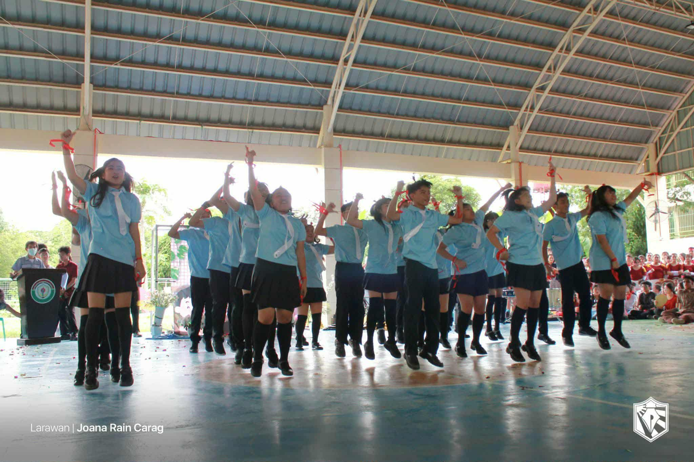

2025-2026
During ICT Month, we participated in the NutriChant competition. Although our team did not win, I learned a lot about teamwork, preparation, and presentation skills. Competing with other groups helped me see the importance of practice, coordination, and staying calm under pressure.
I actively supported my team by contributing ideas, helping with the presentation, and encouraging my classmates throughout the event. Even though we didn’t come out on top, the experience taught me to handle both success and failure gracefully. I can apply what I learned by improving my performance in future competitions and working better with others to achieve our goals. 💻🎶
